Урок 3. Блок 2×4
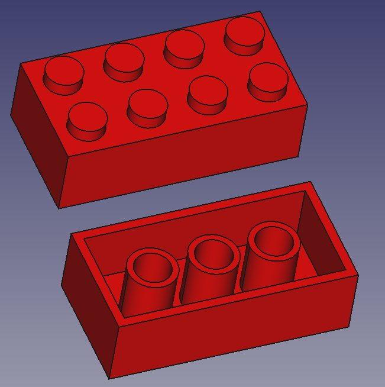
Завдання. Спроєктуйте у FreeCAD деталь LEGO 2×4.
Що навчимося: будувати центральний прямокутник, прив'язувати ескіз до країв грані через зовнішню геометрію, ставити обмеження
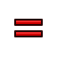
рівності іВідео
Хід роботи
1. Основа
-
Відкрийте FreeCAD і під час створення нового файлу виберіть
 Parametric Body.
Parametric Body. -
Натисніть
 Новий ескіз (New Sketch) і виберіть площину XY. Ескіз відкриється в режимі редагування, і ви дивитиметеся на нього згори.
Новий ескіз (New Sketch) і виберіть площину XY. Ескіз відкриється в режимі редагування, і ви дивитиметеся на нього згори. -
Виберіть інструмент Центральний прямокутник (Centered Rectangle) і клацніть у точці початку координат.
-
Введіть з клавіатури розміри: ширина 47,7 мм, довжина 23,7 мм.
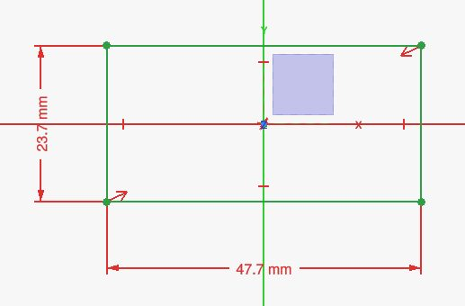
-
Вийдіть з ескізу кнопкою Leave Sketch.
-
Видавіть ескіз інструментом
 Видавлювання (Pad) на 14,4 мм. Інші параметри залишіть як є й натисніть ОК.
Видавлювання (Pad) на 14,4 мм. Інші параметри залишіть як є й натисніть ОК.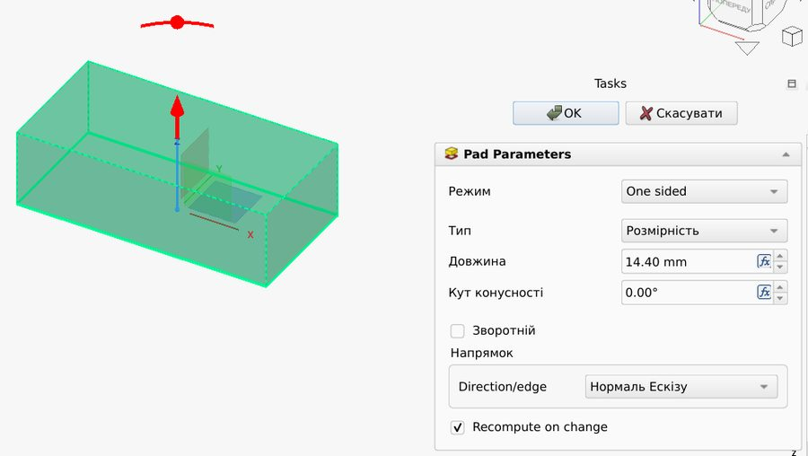
2. Шипи зверху
-
Виділіть верхню грань блока й натисніть
Новий ескіз. -
Намалюйте одне коло інструментом
 Circle у будь-якому місці.
Circle у будь-якому місці. -
Кола треба розташувати відносно країв грані, тому скористаємося інструментом Зовнішня геометрія (External geometry). Він дає змогу посилатися на ребра грані й точно прив'язувати до них кола:
- спочатку клацніть кнопку Режим допоміжних ліній (Toggle construction geometry), щоб лінії стали пунктирними;
- виберіть інструмент Зовнішня геометрія і клацніть по прямокутнику (краях грані);
- знову клацніть кнопку Режим допоміжних ліній, щоб вимкнути його.
-
Інструментом Розмірність задайте відстань 6 мм від центра кола до лівого ребра. Так само задайте 6 мм до верхнього ребра.
-
Задайте діаметр кола 7,2 мм.
-
Намалюйте друге коло.
-
Затисніть Ctrl, виберіть обидва кола і застосуйте обмеження рівності.
-
Затисніть Ctrl, виберіть центри обох кіл і вісь X (червону лінію), потім застосуйте обмеження
 симетрії.
симетрії.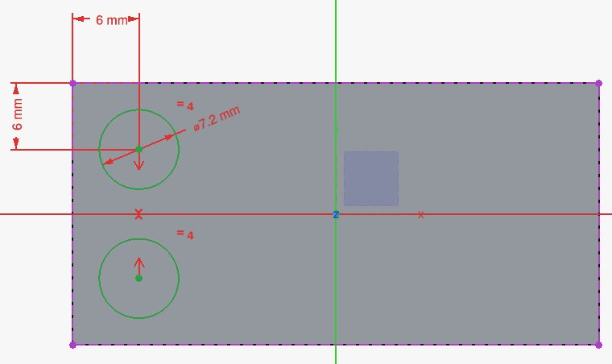
-
Вийдіть з ескізу (Leave Sketch) і видавіть його (
Pad) на 2,7 мм.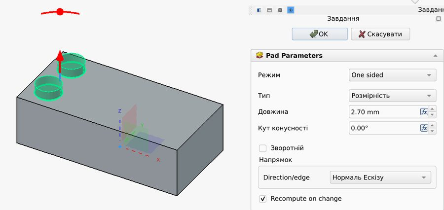
-
Виділіть щойно створене видавлювання (Pad001) і натисніть Лінійний масив. Напрямок: горизонтальна вісь ескізу, довжина 36 мм (проміжок, у який мають уміститися копії), кількість 4. Натисніть ОК.
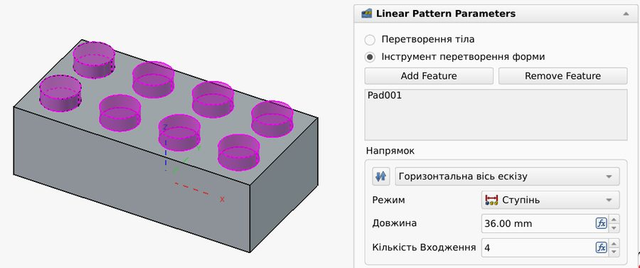
3. Виріз знизу з трубками
-
Поверніть модель, виділіть нижню грань блока й натисніть
Новий ескіз. -
Прив'яжіть ескіз до країв грані так само, як у кроці 9:
- клацніть кнопку Режим допоміжних ліній;
- виберіть Зовнішня геометрія і клацніть по прямокутнику;
- знову клацніть кнопку Режим допоміжних ліній.
-
Намалюйте довільний
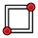
прямокутник. Інструментом Розмірність задайте відстань 1,8 мм від верхнього лівого кута прямокутника до лівого ребра і так само до верхнього ребра. -
Затисніть Ctrl, виберіть верхній лівий кут прямокутника, нижній правий кут і точку початку координат, потім застосуйте
симетрію. -
Намалюйте коло з центром на осі X (червона лінія) і діаметром 9,765 мм. Задайте відстань від його центра до лівого ребра прямокутника: 10,2 мм.
-
Намалюйте ще два кола: одне з центром у початку координат, друге з центром на осі X. Діаметри можуть бути довільні.
-
Затисніть Ctrl, виберіть усі три кола й застосуйте рівність.
-
Задайте відстань від центра правого кола до правого ребра прямокутника: 10,2 мм.
-
Намалюйте ще три кола діаметром 7,2 мм зі спільними центрами з трьома попередніми колами.
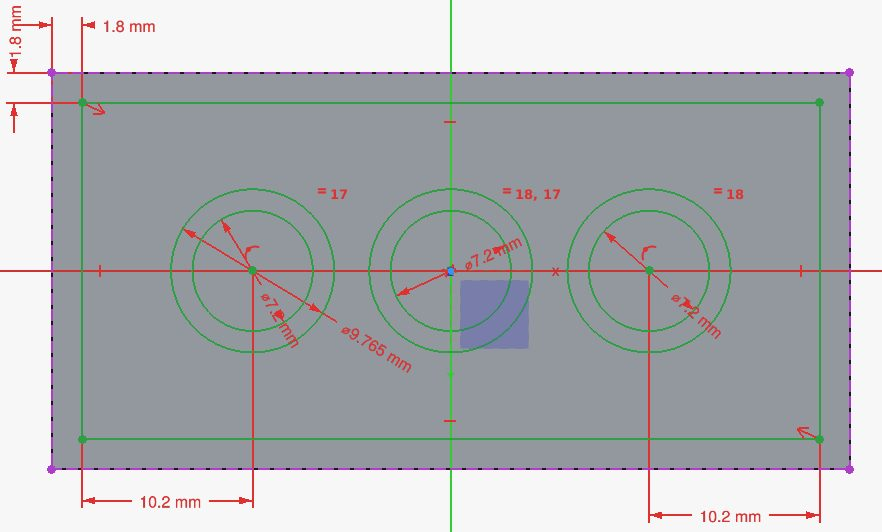
-
Вийдіть з ескізу, виберіть його й застосуйте
 Виріз (Pocket) глибиною 12 мм. Натисніть ОК.
Виріз (Pocket) глибиною 12 мм. Натисніть ОК.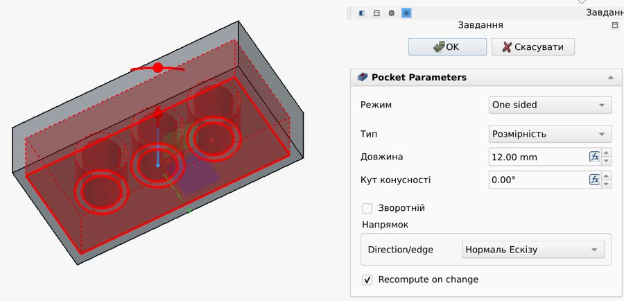
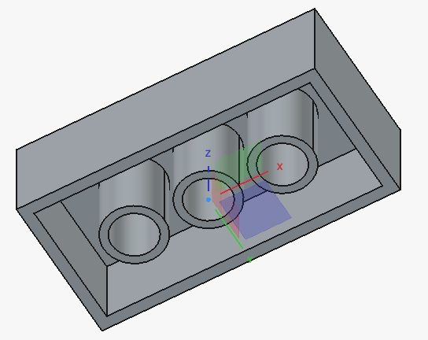
4. Матеріал і колір
-
Виберіть
Тіло в лівій панелі, перейдіть на вкладку Перегляд і натисніть 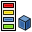
Appearance. -
Виберіть матеріал Plastic.
-
Ще раз натисніть Appearance, виберіть Колір дифузії і задайте колір на свій смак. Натисніть ОК.
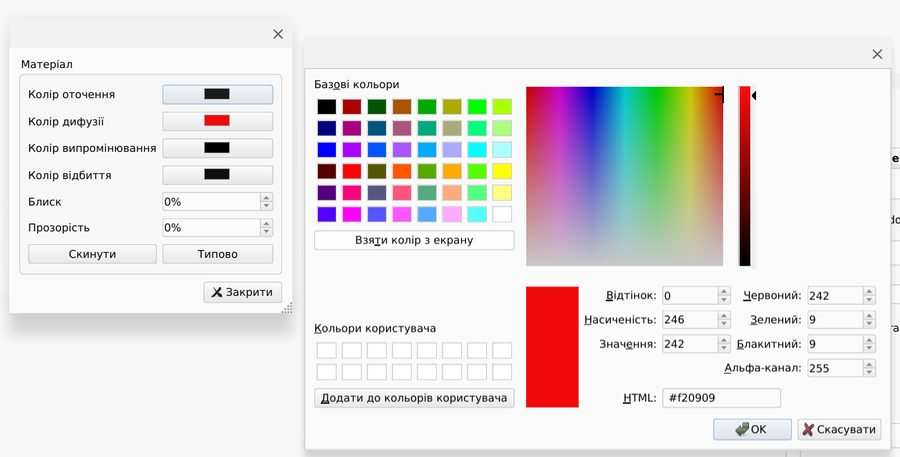
-
Закрийте меню. Модель готова!

-
Збережіть файл:
 Файл → Зберегти як…
Файл → Зберегти як… -
📤 Надішліть файл з роботою в Google Classroom.
Здача. Збережіть файл з назвою
Блок 2x4 Прізвище Клас.FCStd
📤 Надішліть файл з роботою в Google Classroom.